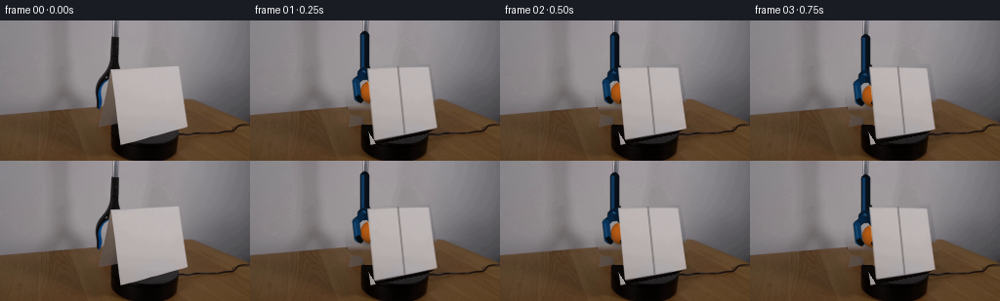
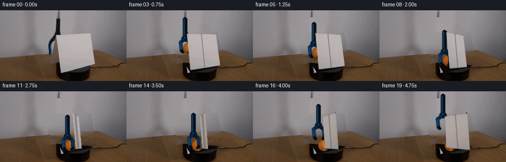

CODING AGENTS AS PIXEL WORLD MODELS
traex/GPT-5.6-Sol · 0004
点击播放 · 原生 RGB 像素
逐轮保存的候选
回放视频、检查图与代码变化。
每份候选均可单独播放。实际图片检查记录在下方工具轨迹中。
候选 01播放与检查图
点击播放 · 原生 RGB 像素


展开代码变化
--- 上一保存版本
+++ 本次保存版本
@@ -0,0 +1,248 @@
+from pathlib import Path
+import cv2
+import numpy as np
+from PIL import Image
+import artifact_io
+
+ROOT = Path(__file__).resolve().parent
+H, W, N = 144, 256, 20
+rng = np.random.default_rng(20261109)
+
+
+def alpha_over(dst, src, alpha):
+ """Composite uint8 RGB source using float alpha."""
+ a = np.clip(alpha, 0.0, 1.0)[..., None]
+ return np.clip(dst.astype(np.float32) * (1-a) + src.astype(np.float32) * a, 0, 255).astype(np.uint8)
+
+
+def soft_polygon(points, blur=0.7):
+ m = np.zeros((H, W), np.uint8)
+ cv2.fillConvexPoly(m, np.round(points).astype(np.int32), 255, lineType=cv2.LINE_AA)
+ if blur:
+ m = cv2.GaussianBlur(m, (0, 0), blur)
+ return m.astype(np.float32) / 255.0
+
+
+def reconstruct_background(src):
+ # Remove the broad white card and the initial grabber/held object. Telea
+ # gives a good local seed; the large interiors are then rebuilt from the
+ # scene's smooth wall/table/platform gradients rather than cloned detail.
+ mask = np.zeros((H, W), np.uint8)
+ card = np.array([[119,47],[184,45],[194,108],[178,116],[129,126],[116,105]], np.int32)
+ cv2.fillConvexPoly(mask, card, 255)
+ tool = np.array([[111,14],[124,14],[124,53],[132,63],[133,91],[123,100],
+ [104,96],[97,85],[97,65],[109,47]], np.int32)
+ cv2.fillConvexPoly(mask, tool, 255)
+ seed = cv2.inpaint(src, mask, 5, cv2.INPAINT_TELEA)
+ out = seed.astype(np.float32)
+
+ # Smooth wall reconstruction, retaining the measured left/right lighting.
+ for y in range(0, 96):
+ xs = np.where(mask[y] > 0)[0]
+ if len(xs) == 0:
+ continue
+ lo, hi = int(xs.min()), int(xs.max())
+ xl, xr = max(0, lo-9), min(W-1, hi+10)
+ lc = src[max(0,y-2):min(H,y+3), max(0,xl-3):xl+2].mean((0,1))
+ rc = src[max(0,y-2):min(H,y+3), xr:min(W,xr+5)].mean((0,1))
+ for x in xs:
+ q = (x-lo) / max(1, hi-lo)
+ # Slight center brightening matches the real backdrop illumination.
+ c = lc*(1-q) + rc*q + 5.0*np.sin(np.pi*q)
+ out[y,x] = c
+
+ # Restore the wood where the card originally concealed the tabletop.
+ # Its row-wise tone is measured from unobstructed areas to either side.
+ for y in range(91, 110):
+ xs = np.where(mask[y] > 0)[0]
+ if len(xs) == 0:
+ continue
+ samples = np.r_[src[y, 35:93], src[y, 199:246]]
+ base = np.median(samples.astype(np.float32), axis=0)
+ for x in xs:
+ grain = 3.0*np.sin(x*.20 + y*.43) + 1.6*np.sin(x*.57-y*.16)
+ out[y,x] = base + grain*np.array([1.0,.75,.48])
+
+ # The card stands on a matte black platform; continue it beneath the card.
+ # Preserve the wood at the extreme left and reconstruct only its footprint.
+ yy, xx = np.mgrid[:H,:W]
+ platform = (xx >= 112) & (xx <= 252) & (yy >= (106 + .075*(xx-112)))
+ hidden_platform = platform & (mask > 0)
+ tex = np.zeros_like(out)
+ noise = rng.normal(0, 1.0, (H,W))
+ v = np.clip(13.0 - .10*(yy-106) + noise, 4, 17)
+ tex[...,0] = v
+ tex[...,1] = v*.78
+ tex[...,2] = v*.62
+ out[hidden_platform] = tex[hidden_platform]
+
+ # Keep boundaries natural and add only imperceptible camera-like grain.
+ out = np.clip(out, 0, 255).astype(np.uint8)
+ return out
+
+
+def add_shadow(im, center, angle, strength=1.0):
+ """Soft contact/cast shadows under the moving apparatus."""
+ layer = np.zeros((H,W), np.float32)
+ cx, cy = center
+ # Ball contact shadow on platform/table, stretched with viewing angle.
+ cv2.ellipse(layer, (int(cx+3), int(cy+8)), (13,4), -5, 0, 360, .55*strength, -1, cv2.LINE_AA)
+ # Slender card cast shadow radiating back/right from the base.
+ sa = np.sin(angle)
+ pts = np.array([[126,113],[187,106],[207+10*sa,118],[139+7*sa,128]], np.int32)
+ cv2.fillConvexPoly(layer, pts, .18*strength, lineType=cv2.LINE_AA)
+ layer = cv2.GaussianBlur(layer, (0,0), 3.0)
+ return (im.astype(np.float32) * (1-layer[...,None])).astype(np.uint8)
+
+
+def render_ball(im, cx, cy, r=11.5, opacity=1.0):
+ """A fuzzy orange tennis ball with spherical lighting and curved seam."""
+ yy, xx = np.mgrid[:H,:W]
+ dx, dy = (xx-cx)/r, (yy-cy)/r
+ rr = dx*dx + dy*dy
+ alpha = np.clip((1.06-np.sqrt(rr))*11.0, 0, 1) * opacity
+ inside = rr <= 1.10
+ z = np.sqrt(np.clip(1-rr, 0, 1))
+ # Upper-left key light and warm, fibrous mottling.
+ light = np.clip(.46 + .39*z - .11*dx - .14*dy, .23, 1.0)
+ fuzz = (2.3*np.sin(xx*2.17+yy*.61) + 1.6*np.sin(xx*.71-yy*1.83)
+ + rng.normal(0,.85,(H,W)))
+ base = np.empty((H,W,3), np.float32)
+ base[...,0] = 205*light + fuzz
+ base[...,1] = 103*light + fuzz*.55
+ base[...,2] = 25*light + fuzz*.22
+ # Fine bright nap at the lit rim.
+ rim = np.clip((np.sqrt(rr)-.86)*8,0,1) * np.clip(1.0+dx+dy,0,1)
+ base += rim[...,None]*np.array([10,7,2],np.float32)
+ base = np.clip(base,0,224).astype(np.uint8)
+ out = alpha_over(im, base, alpha*inside)
+
+ # Familiar tennis-ball seam, clipped rigorously to the circular silhouette.
+ seam = np.zeros((H,W), np.uint8)
+ cv2.ellipse(seam, (round(cx-7),round(cy)), (8,14), -17, -67, 70, 210, 1, cv2.LINE_AA)
+ cv2.ellipse(seam, (round(cx+7),round(cy)), (8,14), -17, 113, 250, 210, 1, cv2.LINE_AA)
+ seam_a = (seam.astype(np.float32)/255.0) * (rr <= .98) * .56 * opacity
+ seam_rgb = np.zeros_like(out); seam_rgb[:] = (224,181,105)
+ return alpha_over(out, seam_rgb, seam_a)
+
+
+def render_grabber(im, bx, by, grip=1.0, alpha_scale=1.0):
+ """Draw a compact blue-black laboratory grabber around ball center bx/by."""
+ s = np.zeros((H,W,3), np.uint8)
+ a = np.zeros((H,W), np.uint8)
+ def line(p1,p2,color,width):
+ cv2.line(s, tuple(map(int,p1)), tuple(map(int,p2)), color, width, cv2.LINE_AA)
+ cv2.line(a, tuple(map(int,p1)), tuple(map(int,p2)), 255, width, cv2.LINE_AA)
+ # Carbon-black shaft with cool steel-blue reflection.
+ line((bx-7,by-58),(bx-7,by-20),(9,15,22),8)
+ line((bx-9,by-58),(bx-9,by-20),(16,54,91),2)
+ # Pivot housing.
+ cv2.ellipse(s,(int(bx-7),int(by-19)),(7,6),-8,0,360,(8,27,46),-1,cv2.LINE_AA)
+ cv2.ellipse(a,(int(bx-7),int(by-19)),(7,6),-8,0,360,255,-1,cv2.LINE_AA)
+ cv2.circle(s,(int(bx-8),int(by-20)),2,(31,78,118),-1,cv2.LINE_AA)
+ # Two articulated jaws; grip expands slightly when released.
+ spread = 2.0*(1-grip)
+ left_mid=(bx-16-spread,by-11); left_tip=(bx-14-spread,by+7)
+ right_mid=(bx+3+spread,by-10); right_tip=(bx+4+spread,by+7)
+ line((bx-9,by-17),left_mid,(8,35,61),6)
+ line(left_mid,left_tip,(10,51,88),5)
+ line((bx-4,by-17),right_mid,(7,25,42),6)
+ line(right_mid,right_tip,(10,47,80),5)
+ # Soft rubber pads.
+ line((left_tip[0],left_tip[1]-2),(left_tip[0]+3,left_tip[1]+2),(5,10,13),4)
+ line((right_tip[0],right_tip[1]-2),(right_tip[0]-3,right_tip[1]+2),(5,10,13),4)
+ # Tiny specular edge makes its material readable at low resolution.
+ line((bx-17-spread,by-10),(bx-15-spread,by+4),(27,76,116),1)
+ return alpha_over(im, s, a.astype(np.float32)/255.0*alpha_scale)
+
+
+def card_quad(angle):
+ # The measured source corners, rotated analytically about the vertical axis.
+ q = np.array([[120.,48.],[183.,47.],[191.,109.],[127.,123.]],np.float32)
+ out = q.copy()
+ for i,(x,y) in enumerate(q):
+ axis = 153.0 + (y-48.0)*.085
+ u = x-axis
+ out[i,0] = axis + u*np.cos(angle)
+ out[i,1] = y + .205*u*np.sin(angle)
+ return out
+
+
+def render_card(im, src, angle):
+ srcq = np.array([[120.,48.],[183.,47.],[191.,109.],[127.,123.]],np.float32)
+ dstq = card_quad(angle)
+ # Avoid a singular homography at the edge-on instant.
+ if abs(np.cos(angle)) < .025:
+ angle += .026
+ dstq = card_quad(angle)
+ M = cv2.getPerspectiveTransform(srcq,dstq)
+ texture = cv2.warpPerspective(src,M,(W,H),flags=cv2.INTER_CUBIC,
+ borderMode=cv2.BORDER_REPLICATE)
+ sm = np.zeros((H,W),np.uint8)
+ cv2.fillConvexPoly(sm,np.round(srcq).astype(np.int32),255,lineType=cv2.LINE_AA)
+ wm = cv2.warpPerspective(sm,M,(W,H),flags=cv2.INTER_LINEAR,
+ borderMode=cv2.BORDER_CONSTANT)
+ # Front dims as it turns; the reverse is slightly warmer and less reflective.
+ facing = np.cos(angle)
+ shade = .94 + .06*abs(facing)
+ if facing < 0:
+ texture = (texture.astype(np.float32)*np.array([.94,.925,.91])*shade).clip(0,255).astype(np.uint8)
+ else:
+ texture = (texture.astype(np.float32)*shade).clip(0,255).astype(np.uint8)
+ out = alpha_over(im,texture,wm.astype(np.float32)/255.0)
+ # Edge thickness appears strongest near edge-on orientation.
+ edge = int(max(1, round(2.4*(1-abs(facing)))))
+ ptop=((dstq[0]+dstq[1])/2).astype(int); pbot=((dstq[2]+dstq[3])/2).astype(int)
+ overlay=np.zeros_like(out); ma=np.zeros((H,W),np.uint8)
+ cv2.line(overlay,tuple(ptop),tuple(pbot),(116,108,105),edge,cv2.LINE_AA)
+ cv2.line(ma,tuple(ptop),tuple(pbot),165,edge,cv2.LINE_AA)
+ return alpha_over(out,overlay,ma.astype(np.float32)/255.0)
+
+
+def smoothstep(x):
+ x=np.clip(x,0,1); return x*x*(3-2*x)
+
+
+def generate():
+ first=np.array(Image.open(ROOT/'first_frame.png').convert('RGB'),dtype=np.uint8)
+ bg=reconstruct_background(first)
+ frames=[]
+ for i in range(N):
+ if i==0:
+ frames.append(first.copy())
+ continue
+ # Constant physical rotation, clockwise as viewed from above.
+ ang=np.deg2rad(7.1*i)
+ # Lower during the first 3 s, release, then withdraw without the ball.
+ lower=smoothstep((i-1)/10.0)
+ ball_x=124.0 + 19.0*lower
+ ball_y=73.0 + 37.0*lower
+ released=i>=13
+ if released:
+ ball_x,ball_y=143.0,110.0
+ lift=smoothstep((i-13)/6.0)
+ tool_x=143.0-8.0*lift
+ tool_y=110.0-43.0*lift
+ grip=1.0-lift
+ else:
+ tool_x,tool_y=ball_x,ball_y
+ grip=1.0
+ im=bg.copy()
+ im=add_shadow(im,(ball_x,ball_y),ang,.85)
+ # Apparatus is behind the rotating sheet, enforcing correct occlusion.
+ im=render_ball(im,ball_x,ball_y,11.5,1.0)
+ im=render_grabber(im,tool_x,tool_y,grip,1.0)
+ im=render_card(im,first,ang)
+ # Fixed-camera sensor grain: subtle and deterministic, not camera motion.
+ grain=rng.normal(0,.32,im.shape[:2])[...,None]
+ im=np.clip(im.astype(np.float32)+grain,0,255).astype(np.uint8)
+ frames.append(im)
+ arr=np.stack(frames).astype(np.uint8)
+ # Contract invariant: exact untouched source frame at t=0.
+ arr[0]=first
+ return arr
+
+
+if __name__=='__main__':
+ frames=generate()
+ artifact_io.save(frames,ROOT)
候选 02播放与检查图
点击播放 · 原生 RGB 像素

展开代码变化
--- 上一保存版本
+++ 本次保存版本
@@ -233,9 +233,9 @@
im=render_ball(im,ball_x,ball_y,11.5,1.0)
im=render_grabber(im,tool_x,tool_y,grip,1.0)
im=render_card(im,first,ang)
- # Fixed-camera sensor grain: subtle and deterministic, not camera motion.
- grain=rng.normal(0,.32,im.shape[:2])[...,None]
- im=np.clip(im.astype(np.float32)+grain,0,255).astype(np.uint8)
+ # Locked-off camera: pixels outside the moving setup stay truly fixed.
+ # Fine texture is already baked into the reconstructed background and
+ # source-derived cardstock, avoiding distracting full-frame shimmer.
frames.append(im)
arr=np.stack(frames).astype(np.uint8)
# Contract invariant: exact untouched source frame at t=0.
候选 03播放与检查图
可观测工具轨迹
实际执行的命令与返回图片。
命令 1exit 0
/bin/bash -lc "cat GENERATION_RULES.md && printf '\\n--- PROMPT ---\\n' && cat prompt.txt"
命令 2exit 1
/bin/bash -lc "find . -maxdepth 2 -type f -printf '%p\\n' | sort && printf '\\n--- tools ---\\n' && command -v ffmpeg && command -v ffprobe && python3 - <<'PY' import importlib.util for x in ['PIL','cv2','numpy','imageio']: print(x, bool(importlib.util.find_spec(x))) PY"
命令 3exit 0
/bin/bash -lc "python3 - <<'PY'
from PIL import Image
im=Image.open('first_frame.png').convert('RGB')
print(im.size, im.mode)
import numpy as np
x=np.array(im)
print('min/max/mean',x.min(),x.max(),x.mean(axis=(0,1)))
PY"命令 4exit 0
/bin/bash -lc 'cat artifact_io.py'
命令 5exit 0
/bin/bash -lc 'set +e; for x in ffmpeg ffprobe convert; do printf "$x: "; command -v $x || true; done; python3 - <<'"'PY' import importlib.util for x in ['PIL','cv2','numpy','imageio','scipy','sklearn']: print(x, bool(importlib.util.find_spec(x))) PY"
命令 6exit 0
/bin/bash -lc "python3 - <<'PY'
from PIL import Image
import numpy as np
im=np.array(Image.open('first_frame.png').convert('RGB'))
# blockwise mean and dominant channel, 8x8 blocks => 18 rows x 32 cols
chars=' .:-=+*#%@'
g=im.mean(2)
for y in range(0,144,8):
print(''.join(chars[min(9,int(g[y:y+8,x:x+8].mean()/256*10))] for x in range(0,256,8)))
print('\\nDominant channel per 8x8 B,R etc')
for y in range(0,144,8):
s=''
for x in range(0,256,8):
v=im[y:y+8,x:x+8].mean((0,1)); mx=v.max(); mn=v.min()
s += '.' if mx-mn<8 else 'R' if v.argmax()==0 else 'G' if v.argmax()==1 else 'B'
print(s)
PY"命令 7exit 0
/bin/bash -lc "python3 - <<'PY'
import cv2, numpy as np
from PIL import Image
im=np.array(Image.open('first_frame.png').convert('RGB'))
# kmeans colors+slight position weighting
h,w=im.shape[:2]
ys,xs=np.mgrid[:h,:w]
X=np.c_[im.reshape(-1,3), xs.ravel()*.15, ys.ravel()*.15].astype(np.float32)
crit=(cv2.TERM_CRITERIA_EPS+cv2.TERM_CRITERIA_MAX_ITER,100,.1)
_,lab,cen=cv2.kmeans(X,14,None,crit,10,cv2.KMEANS_PP_CENTERS)
lab=lab.ravel().reshape(h,w)
for k,c in sorted(enumerate(cen),key=lambda z:np.sum(lab==z[0]), reverse=True):
yy,xx=np.where(lab==k); n=len(xx)
print(f'{k:2} n={n:5} rgb={c[:3].round().astype(int)} posmean=({xx.mean():.0f},{yy.mean():.0f}) bbox=({xx.min()},{yy.min()})-({xx.max()},{yy.max()})')
# Simple exact-ish chroma masks and components
conds={
'orange':(im[:,:,0]>im[:,:,1]*1.25)&(im[:,:,0]>im[:,:,2]*1.5)&(im[:,:,0]>90),
'blue':(im[:,:,2]>im[:,:,0]*1.12)&(im[:,:,2]>im[:,:,1]*1.05)&(im[:,:,2]>40),
'dark':im.mean(2)<45,
'bright':im.mean(2)>155,
}
for nm,m in conds.items():
n,l,st,cent=cv2.connectedComponentsWithStats(m.astype('uint8'),8)
print('\\n',nm,'total',m.sum())
for i in sorted(range(1,n),key=lambda i:st[i,4],reverse=True)[:12]:
x,y,ww,hh,a=st[i]; print(a,(x,y,ww,hh),cent[i].round(1))
PY"命令 8exit 0
/bin/bash -lc "python3 - <<'PY'
import cv2, numpy as np
from PIL import Image
im=cv2.imread('first_frame.png'); gray=cv2.cvtColor(im,cv2.COLOR_BGR2GRAY)
# hough circles
for p2 in [10,15,20,25,30]:
c=cv2.HoughCircles(gray,cv2.HOUGH_GRADIENT,1,8,param1=60,param2=p2,minRadius=4,maxRadius=30)
print('p2',p2, None if c is None else np.round(c[0],1).tolist())
# Lines
edges=cv2.Canny(gray,40,100)
ls=cv2.HoughLinesP(edges,1,np.pi/180,threshold=30,minLineLength=25,maxLineGap=5)
print('lines')
for a in sorted(ls[:,0].tolist(),key=lambda z:-((z[2]-z[0])**2+(z[3]-z[1])**2))[:40]:
print(a)
PY"命令 9exit 0
/bin/bash -lc "python3 - <<'PY'
from PIL import Image
import numpy as np
im=np.array(Image.open('first_frame.png'))
for y in [0,8,16,24,32,40,48,56,64,72,80,88,96,104,112,120,128,136,143]:
print('\\ny',y)
for x in range(0,256,8):
print('%3d,%3d,%3d'%tuple(im[y,x]),end=' |')
print()
PY"命令 10exit 0
/bin/bash -lc "python3 - <<'PY'
from PIL import Image
import numpy as np
im=np.array(Image.open('first_frame.png'))
# print RGB at 4px blocks for x80:200, y0:136 quantized to classes
# kmeans RGB only
import cv2
_,l,c=cv2.kmeans(im.reshape(-1,3).astype('f4'),12,None,(3,100,.1),15,cv2.KMEANS_PP_CENTERS)
l=l.reshape(144,256); c=c.astype(int)
order=np.argsort(c.mean(1)); remap=np.zeros(12,int); remap[order]=np.arange(12)
syms='0123456789AB'
print('colors sorted dark-bright')
for i in order: print(syms[remap[i]],c[i])
print('region x80:208 every4, y0:136 every4 (mode cluster each 4x4)')
for y in range(0,136,4):
out=''
for x in range(80,208,4):
q=l[y:y+4,x:x+4].ravel(); k=np.bincount(q,minlength=12).argmax(); out+=syms[remap[k]]
print(f'{y:03} '+out)
PY"命令 11exit 0
/bin/bash -lc "cat > generate.py <<'PY'
from pathlib import Path
import cv2
import numpy as np
from PIL import Image
import artifact_io
ROOT = Path(__file__).resolve().parent
H, W, N = 144, 256, 20
rng = np.random.default_rng(20261109)
def alpha_over(dst, src, alpha):
\"\"\"Composite uint8 RGB source using float alpha.\"\"\"
a = np.clip(alpha, 0.0, 1.0)[..., None]
return np.clip(dst.astype(np.float32) * (1-a) + src.astype(np.float32) * a, 0, 255).astype(np.uint8)
def soft_polygon(points, blur=0.7):
m = np.zeros((H, W), np.uint8)
cv2.fillConvexPoly(m, np.round(points).astype(np.int32), 255, lineType=cv2.LINE_AA)
if blur:
m = cv2.GaussianBlur(m, (0, 0), blur)
return m.astype(np.float32) / 255.0
def reconstruct_background(src):
# Remove the broad white card and the initial grabber/held object. Telea
# gives a good local seed; the large interiors are then rebuilt from the
# scene's smooth wall/table/platform gradients rather than cloned detail.
mask = np.zeros((H, W), np.uint8)
card = np.array([[119,47],[184,45],[194,108],[178,116],[129,126],[116,105]], np.int32)
cv2.fillConvexPoly(mask, card, 255)
tool = np.array([[111,14],[124,14],[124,53],[132,63],[133,91],[123,100],
[104,96],[97,85],[97,65],[109,47]], np.int32)
cv2.fillConvexPoly(mask, tool, 255)
seed = cv2.inpaint(src, mask, 5, cv2.INPAINT_TELEA)
out = seed.astype(np.float32)
# Smooth wall reconstruction, retaining the measured left/right lighting.
for y in range(0, 96):
xs = np.where(mask[y] > 0)[0]
if len(xs) == 0:
continue
lo, hi = int(xs.min()), int(xs.max())
xl, xr = max(0, lo-9), min(W-1, hi+10)
lc = src[max(0,y-2):min(H,y+3), max(0,xl-3):xl+2].mean((0,1))
rc = src[max(0,y-2):min(H,y+3), xr:min(W,xr+5)].mean((0,1))
for x in xs:
q = (x-lo) / max(1, hi-lo)
# Slight center brightening matches the real backdrop illumination.
c = lc*(1-q) + rc*q + 5.0*np.sin(np.pi*q)
out[y,x] = c
# Restore the wood where the card originally concealed the tabletop.
# Its row-wise tone is measured from unobstructed areas to either side.
for y in range(91, 110):
xs = np.where(mask[y] > 0)[0]
if len(xs) == 0:
continue
samples = np.r_[src[y, 35:93], src[y, 199:246]]
base = np.median(samples.astype(np.float32), axis=0)
for x in xs:
grain = 3.0*np.sin(x*.20 + y*.43) + 1.6*np.sin(x*.57-y*.16)
out[y,x] = base + grain*np.array([1.0,.75,.48])
# The card stands on a matte black platform; continue it beneath the card.
# Preserve the wood at the extreme left and reconstruct only its footprint.
yy, xx = np.mgrid[:H,:W]
platform = (xx >= 112) & (xx <= 252) & (yy >= (106 + .075*(xx-112)))
hidden_platform = platform & (mask > 0)
tex = np.zeros_like(out)
noise = rng.normal(0, 1.0, (H,W))
v = np.clip(13.0 - .10*(yy-106) + noise, 4, 17)
tex[...,0] = v
tex[...,1] = v*.78
tex[...,2] = v*.62
out[hidden_platform] = tex[hidden_platform]
# Keep boundaries natural and add only imperceptible camera-like grain.
out = np.clip(out, 0, 255).astype(np.uint8)
return out
def add_shadow(im, center, angle, strength=1.0):
\"\"\"Soft contact/cast shadows under the moving apparatus.\"\"\"
layer = np.zeros((H,W), np.float32)
cx, cy = center
# Ball contact shadow on platform/table, stretched with viewing angle.
cv2.ellipse(layer, (int(cx+3), int(cy+8)), (13,4), -5, 0, 360, .55*strength, -1, cv2.LINE_AA)
# Slender card cast shadow radiating back/right from the base.
sa = np.sin(angle)
pts = np.array([[126,113],[187,106],[207+10*sa,118],[139+7*sa,128]], np.int32)
cv2.fillConvexPoly(layer, pts, .18*strength, lineType=cv2.LINE_AA)
layer = cv2.GaussianBlur(layer, (0,0), 3.0)
return (im.astype(np.float32) * (1-layer[...,None])).astype(np.uint8)
def render_ball(im, cx, cy, r=11.5, opacity=1.0):
\"\"\"A fuzzy orange tennis ball with spherical lighting and curved seam.\"\"\"
yy, xx = np.mgrid[:H,:W]
dx, dy = (xx-cx)/r, (yy-cy)/r
rr = dx*dx + dy*dy
alpha = np.clip((1.06-np.sqrt(rr))*11.0, 0, 1) * opacity
inside = rr <= 1.10
z = np.sqrt(np.clip(1-rr, 0, 1))
# Upper-left key light and warm, fibrous mottling.
light = np.clip(.46 + .39*z - .11*dx - .14*dy, .23, 1.0)
fuzz = (2.3*np.sin(xx*2.17+yy*.61) + 1.6*np.sin(xx*.71-yy*1.83)
+ rng.normal(0,.85,(H,W)))
base = np.empty((H,W,3), np.float32)
base[...,0] = 205*light + fuzz
base[...,1] = 103*light + fuzz*.55
base[...,2] = 25*light + fuzz*.22
# Fine bright nap at the lit rim.
rim = np.clip((np.sqrt(rr)-.86)*8,0,1) * np.clip(1.0+dx+dy,0,1)
base += rim[...,None]*np.array([10,7,2],np.float32)
base = np.clip(base,0,224).astype(np.uint8)
out = alpha_over(im, base, alpha*inside)
# Familiar tennis-ball seam, clipped rigorously to the circular silhouette.
seam = np.zeros((H,W), np.uint8)
cv2.ellipse(seam, (round(cx-7),round(cy)), (8,14), -17, -67, 70, 210, 1, cv2.LINE_AA)
cv2.ellipse(seam, (round(cx+7),round(cy)), (8,14), -17, 113, 250, 210, 1, cv2.LINE_AA)
seam_a = (seam.astype(np.float32)/255.0) * (rr <= .98) * .56 * opacity
seam_rgb = np.zeros_like(out); seam_rgb[:] = (224,181,105)
return alpha_over(out, seam_rgb, seam_a)
def render_grabber(im, bx, by, grip=1.0, alpha_scale=1.0):
\"\"\"Draw a compact blue-black laboratory grabber around ball center bx/by.\"\"\"
s = np.zeros((H,W,3), np.uint8)
a = np.zeros((H,W), np.uint8)
def line(p1,p2,color,width):
cv2.line(s, tuple(map(int,p1)), tuple(map(int,p2)), color, width, cv2.LINE_AA)
cv2.line(a, tuple(map(int,p1)), tuple(map(int,p2)), 255, width, cv2.LINE_AA)
# Carbon-black shaft with cool steel-blue reflection.
line((bx-7,by-58),(bx-7,by-20),(9,15,22),8)
line((bx-9,by-58),(bx-9,by-20),(16,54,91),2)
# Pivot housing.
cv2.ellipse(s,(int(bx-7),int(by-19)),(7,6),-8,0,360,(8,27,46),-1,cv2.LINE_AA)
cv2.ellipse(a,(int(bx-7),int(by-19)),(7,6),-8,0,360,255,-1,cv2.LINE_AA)
cv2.circle(s,(int(bx-8),int(by-20)),2,(31,78,118),-1,cv2.LINE_AA)
# Two articulated jaws; grip expands slightly when released.
spread = 2.0*(1-grip)
left_mid=(bx-16-spread,by-11); left_tip=(bx-14-spread,by+7)
right_mid=(bx+3+spread,by-10); right_tip=(bx+4+spread,by+7)
line((bx-9,by-17),left_mid,(8,35,61),6)
line(left_mid,left_tip,(10,51,88),5)
line((bx-4,by-17),right_mid,(7,25,42),6)
line(right_mid,right_tip,(10,47,80),5)
# Soft rubber pads.
line((left_tip[0],left_tip[1]-2),(left_tip[0]+3,left_tip[1]+2),(5,10,13),4)
line((right_tip[0],right_tip[1]-2),(right_tip[0]-3,right_tip[1]+2),(5,10,13),4)
# Tiny specular edge makes its material readable at low resolution.
line((bx-17-spread,by-10),(bx-15-spread,by+4),(27,76,116),1)
return alpha_over(im, s, a.astype(np.float32)/255.0*alpha_scale)
def card_quad(angle):
# The measured source corners, rotated analytically about the vertical axis.
q = np.array([[120.,48.],[183.,47.],[191.,109.],[127.,123.]],np.float32)
out = q.copy()
for i,(x,y) in enumerate(q):
axis = 153.0 + (y-48.0)*.085
u = x-axis
out[i,0] = axis + u*np.cos(angle)
out[i,1] = y + .205*u*np.sin(angle)
return out
def render_card(im, src, angle):
srcq = np.array([[120.,48.],[183.,47.],[191.,109.],[127.,123.]],np.float32)
dstq = card_quad(angle)
# Avoid a singular homography at the edge-on instant.
if abs(np.cos(angle)) < .025:
angle += .026
dstq = card_quad(angle)
M = cv2.getPerspectiveTransform(srcq,dstq)
texture = cv2.warpPerspective(src,M,(W,H),flags=cv2.INTER_CUBIC,
borderMode=cv2.BORDER_REPLICATE)
sm = np.zeros((H,W),np.uint8)
cv2.fillConvexPoly(sm,np.round(srcq).astype(np.int32),255,lineType=cv2.LINE_AA)
wm = cv2.warpPerspective(sm,M,(W,H),flags=cv2.INTER_LINEAR,
borderMode=cv2.BORDER_CONSTANT)
# Front dims as it turns; the reverse is slightly warmer and less reflective.
facing = np.cos(angle)
shade = .94 + .06*abs(facing)
if facing < 0:
texture = (texture.astype(np.float32)*np.array([.94,.925,.91])*shade).clip(0,255).astype(np.uint8)
else:
texture = (texture.astype(np.float32)*shade).clip(0,255).astype(np.uint8)
out = alpha_over(im,texture,wm.astype(np.float32)/255.0)
# Edge thickness appears strongest near edge-on orientation.
edge = int(max(1, round(2.4*(1-abs(facing)))))
ptop=((dstq[0]+dstq[1])/2).astype(int); pbot=((dstq[2]+dstq[3])/2).astype(int)
overlay=np.zeros_like(out); ma=np.zeros((H,W),np.uint8)
cv2.line(overlay,tuple(ptop),tuple(pbot),(116,108,105),edge,cv2.LINE_AA)
cv2.line(ma,tuple(ptop),tuple(pbot),165,edge,cv2.LINE_AA)
return alpha_over(out,overlay,ma.astype(np.float32)/255.0)
def smoothstep(x):
x=np.clip(x,0,1); return x*x*(3-2*x)
def generate():
first=np.array(Image.open(ROOT/'first_frame.png').convert('RGB'),dtype=np.uint8)
bg=reconstruct_background(first)
frames=[]
for i in range(N):
if i==0:
frames.append(first.copy())
continue
# Constant physical rotation, clockwise as viewed from above.
ang=np.deg2rad(7.1*i)
# Lower during the first 3 s, release, then withdraw without the ball.
lower=smoothstep((i-1)/10.0)
ball_x=124.0 + 19.0*lower
ball_y=73.0 + 37.0*lower
released=i>=13
if released:
ball_x,ball_y=143.0,110.0
lift=smoothstep((i-13)/6.0)
tool_x=143.0-8.0*lift
tool_y=110.0-43.0*lift
grip=1.0-lift
else:
tool_x,tool_y=ball_x,ball_y
grip=1.0
im=bg.copy()
im=add_shadow(im,(ball_x,ball_y),ang,.85)
# Apparatus is behind the rotating sheet, enforcing correct occlusion.
im=render_ball(im,ball_x,ball_y,11.5,1.0)
im=render_grabber(im,tool_x,tool_y,grip,1.0)
im=render_card(im,first,ang)
# Fixed-camera sensor grain: subtle and deterministic, not camera motion.
grain=rng.normal(0,.32,im.shape[:2])[...,None]
im=np.clip(im.astype(np.float32)+grain,0,255).astype(np.uint8)
frames.append(im)
arr=np.stack(frames).astype(np.uint8)
# Contract invariant: exact untouched source frame at t=0.
arr[0]=first
return arr
if __name__=='__main__':
frames=generate()
artifact_io.save(frames,ROOT)
PY
python3 generate.py
python3 - <<'PY'
from pathlib import Path
import numpy as np
from PIL import Image
z=np.load('pixels.npz')['pixels']
frames=np.stack([np.array(Image.open(f'frames/{i:02d}.png').convert('RGB')) for i in range(20)])
first=np.array(Image.open('first_frame.png').convert('RGB'))
print('frames',frames.shape,frames.dtype,'first exact',np.array_equal(frames[0],first))
print('per-frame changed pixels:',[(int(np.any(frames[i]"'!=frames[i-1],axis=2).sum())) for i in range(1,20)])
print('"'means:',np.round(frames.mean((1,2,3)),1).tolist())
print('outputs:',[(p.name,p.stat().st_size) for p in sorted(Path('.').glob('*')) if p.is_file()])
PY"命令 12exit 0
/bin/bash -lc "python3 generate.py && python3 - <<'PY'
from PIL import Image
import numpy as np
F=np.stack([np.array(Image.open(f'frames/{i:02d}.png').convert('RGB')) for i in range(20)])
S=np.array(Image.open('first_frame.png').convert('RGB'))
assert F.shape==(20,144,256,3) and F.dtype==np.uint8
assert np.array_equal(F[0],S)
for i in range(2,20):
assert np.array_equal(F[i,:35,:75],F[1,:35,:75])
print('frame exact:', np.array_equal(F[0],S))
for i in [1,2,5,8,11,13,15,17,19]:
d=np.any(F[i]"'!=F[max(1,i-1)],axis=2)
ys,xs=np.where(d)
print(i,'"'changed',len(xs),'bbox',None if not len(xs) else (xs.min(),ys.min(),xs.max(),ys.max()),'centroid',None if not len(xs) else tuple(np.round([xs.mean(),ys.mean()],1)))
print('shape/dtype/range',F.shape,F.dtype,(F.min(),F.max()))
z=np.load('pixels.npz')['pixels']; print('pixels.npz tensor',z.shape,z.dtype)
PY"命令 13exit 0
/bin/bash -lc "python3 - <<'PY'
from PIL import Image
import numpy as np
F=np.stack([np.array(Image.open(f'frames/{i:02d}.png')) for i in range(20)])
for i in range(1,20):
d=np.any(F[i]"'!=F[i-1],2); mae=np.abs(F[i].astype(int)-F[i-1].astype(int)).mean()
print(i,d.sum(),round(mae,2))
PY'保存候选 3 份；完成命令 13 次；可验证图片返回 0 张。原始 API 响应与完整日志保留在本地。